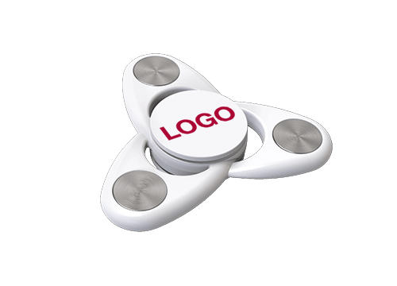

Meu top 5 Fidget Spinner

Gosto deste fidget spinner porque ele tem um design moderno, é confortável de usar e sua cor branca com detalhes metálicos deixa o visual mais bonito e elegante.

Gosto deste fidget spinner porque ele tem um design simples, uma cor vibrante e é confortável de usar. Além disso, seu formato clássico facilita o manuseio e a rotação.

Gosto deste fidget spinner porque ele tem um visual moderno e colorido. Seu acabamento metálico chama a atenção e deixa o acessório mais bonito e diferente.

Gosto deste fidget spinner porque ele tem um design elegante e moderno. Os detalhes em verde dão um toque diferente, deixando o acessório mais bonito e chamativo.